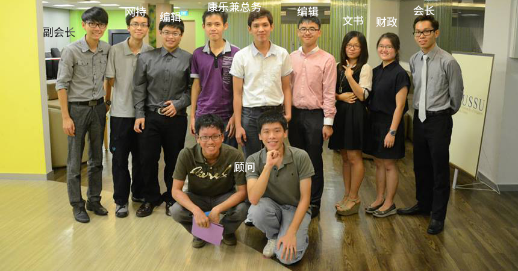

Objective
留新大马独中生联谊会 (AMCISA)
成立于1983年，由就读于新加坡国立大学(NUS)和南洋理工大学(NTU)的独中生毕业生组成。
主要宗旨：
- 维系及增进独中生之间的感情
- 与董教总及各独中保持联络提供新加坡大学的最新资料
- 协助新生适应大学生
联谊会执委团希望帮助每一位到新加坡求学的学生，提供一个归属感给他们。每年我们都会办一些活动如篮球赛、中秋晚会或新春晚会等让大伙联络感情或在异乡共度佳节。此外，我们也会尽我们所能解答或协助学弟妹们在学校所面对的种种问题，使他们在异地也不至于感到孤单和无助。
每年AMCISA都会在七月中旬办一个迎新营， 让即将前来大学的独中生更快适应大学生活。在迎新营中学长姐会协助学弟妹们处理学生证的申请、身体检查、贷款等繁杂手续。希望所有即将前来新加坡留学的同学们都可以加入我们这个大家庭，而且通过这个迎新营同学们将会认识到来自不同地区的应届的独中生，往日也较容易融入大学生活。 同学们或校方如果有任何疑问，可联络我们或到我们的面书讨论区留言提问。我们非常愿意解答同学们的一切疑惑。
NTU Main Committee
| 职位 | 名字 |
|---|---|
| 会长 | 萧征源 |
| 副会长 | 李凯文 |
| 文书 | 黄佳娴 |
| 财政 | 梁詠诗 |
| 总务 | 蔡长智 |
| 总务 | 邓奕靖 |
| 编辑 | 陈晓瑜 |
| 编辑 | 陈淑琪 |
| 节策 | 刘存全 |
| 节策 | 罗巧雯 |
| 节策 | 陈伟杰 |
| 网持 | 陈富浩 |
| 网持 | 张毅盛 |
NUS Main Committee

| 职位 | 名字 |
|---|---|
| 会长 | 陈子城 |
| 副会长 | 陈章佑 |
| 文书 | 陈宜羚 |
| 财政 | 卢辉颖 |
| 编辑 | 王理威 |
| 编辑 | 陆文亮 |
| 康乐兼总务 | 陈颖聪 |
| 康乐兼总务 | 赖硕宇 |
| 网持 | 黄宇轩 |